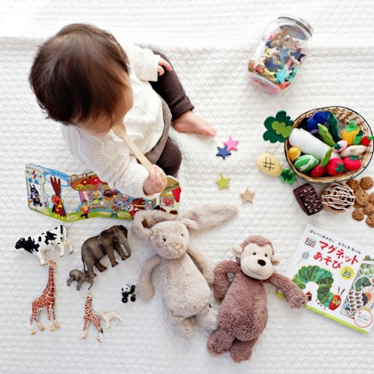

A good nursery does not need to look like a catalog. It needs a safe sleep space, a place to change diapers, storage that works when you are tired, and a few small tools that reduce friction. Many baby products are marketed around anxiety. The better approach is to buy fewer things, choose them carefully, and leave room to learn what your household actually needs.
This guide focuses on practical nursery basics: a compliant crib or bassinet, a firm mattress, washable sheets, a wipeable changing pad, a dimmable light, simple storage, a reliable sound machine, and a monitor that matches your comfort level. We are not giving medical or safety advice, and parents should always follow current guidance from pediatric professionals and product safety agencies. The goal here is to help you avoid flimsy, fussy, or short-lived purchases.
Convertible crib with a firm mattress
A stable crib that meets current standards and uses a properly fitting firm mattress is the anchor of a nursery.
Typical street price: $180 to $500 before mattress
Wipeable changing pad
A non-fabric changing surface saves laundry and makes overnight changes less chaotic.
Typical street price: $60 to $140

Open bins and low storage
Simple storage beats complicated systems because it still works when the room is messy and everyone is tired.
Typical street price: $20 to $120
Nursery buying checklist
| Item | What matters | Typical cost | Best reason to buy | Skip if |
|---|---|---|---|---|
| Crib | Current standards, stable frame, adjustable mattress height | $180 to $500 | Longer-term sleep space | You need only a temporary bedside setup |
| Firm mattress | Proper fit, firm surface, waterproof cover option | $80 to $250 | Core sleep setup | It leaves gaps in the crib |
| Changing pad | Wipeable surface, stable base, simple shape | $60 to $140 | Fast cleanup | You already have a safe changing routine elsewhere |
| Monitor | Range, battery, privacy, night view | $40 to $250 | Peace of mind | Your living space is very small |
| Storage bins | Open access, washable or wipeable material | $20 to $120 | Reducing clutter | They become decorative clutter themselves |
Build the sleep space first
The sleep space is the one area where simple is usually better. A crib or bassinet should be stable, appropriately sized, and used with the mattress and setup recommended by the manufacturer. Avoid buying used sleep products unless you can verify the model, recall status, hardware, instructions, and condition. Missing screws or an unknown history are not worth the savings.
Parents are often tempted by accessories that promise better sleep. Be careful. Extra padding, loose bedding, and clever add-ons can create safety concerns. The most useful purchases are often plain: fitted sheets that wash well, a waterproof mattress protector if appropriate for the mattress, and a sleep space that is easy to access without rearranging the room.
Changing stations should be boring and washable
Changing areas get used constantly. A wipeable pad is easier than a fabric-covered pad that needs frequent laundering. Keep diapers, wipes, cream, bags, and a spare outfit within arm's reach, but do not overload the surface. The best changing setup is not the prettiest one. It is the one that lets you move quickly, keep one hand where it needs to be, and clean the area without starting a load of laundry.
Choosing a monitor
Baby monitors range from simple audio units to app-connected video systems. The right choice depends on your home, your comfort level, and your privacy preferences. Audio monitors are inexpensive and often enough in smaller homes. Video monitors are useful if rooms are farther apart or you want to check whether a child is awake without entering the room. Wi-Fi monitors add remote access, but they also add account, app, and security considerations.
If you buy a connected monitor, use a strong unique password, keep firmware updated, and avoid sharing access broadly. A monitor should make life easier, not create a privacy project you cannot maintain.
Storage that survives real life
Open bins, low shelves, and labeled baskets work better than elaborate systems. Babies become toddlers quickly, and the room's needs change. A storage solution that only works for newborn items may not fit board books, blocks, blankets, and clothes later. Choose flexible pieces before themed pieces.
Also consider laundry flow. A hamper near the changing area is more useful than a decorative basket across the room. Keep spare sheets and sleep sacks close to the crib so a middle-of-the-night change does not require searching drawers.
Lighting and sound
A dimmable lamp or plug-in night light helps with nighttime feeding and changes. Bright overhead lights can wake everyone up. Look for warm light, simple controls, and enough brightness to see what you are doing without turning the room into daytime. A sound machine can be helpful if household noise, siblings, traffic, or shared walls are a problem. Choose one with physical buttons and no bright display.
What most parents can skip at first
Skip large specialty gadgets until you know you need them. Many wipe warmers, complex organizers, single-purpose sterilizers, and decorative furniture pieces are bought before routines are clear. If a product solves a problem you do not yet have, wait. The first weeks will show what is actually annoying in your home.
Also avoid buying too many clothes in one size. Babies grow unpredictably, laundry frequency varies, and gifted clothing can pile up. A smaller set of easy-wash basics is usually more useful than a closet full of tiny outfits that are hard to put on.
Long-term ownership notes
Good nursery products should be easy to clean, easy to resell or pass along safely, and durable enough for daily use. Check whether replacement parts are available, whether fabric covers can be washed, and whether the product has a clear model number for recall checks. Keep manuals and hardware together. Future you will appreciate it when converting a crib height, moving furniture, or storing items.
Real product examples we would compare
| Product | Category | Published details | Why parents like it | Important caveat |
|---|---|---|---|---|
| Babyletto Hudson 3-in-1 Convertible Crib | Crib | Convertible design, adjustable mattress positions, Greenguard Gold certification on many listings | Clean design, broad availability, useful beyond the newborn stage | Conversion kits and mattresses may be sold separately |
| Newton Baby Crib Mattress | Crib mattress | Washable cover, breathable core marketing, standard crib sizing | Appeals to parents who prioritize washability and airflow claims | Higher price than basic firm crib mattresses |
| Keekaroo Peanut Changer | Changing pad | Wipeable surface, contoured shape, no fabric cover required | Easy cleanup after messy changes | Heavier and more expensive than foam pads |
| Infant Optics DXR-8 Pro | Video monitor | Non-Wi-Fi design, interchangeable lens support, noise reduction feature | Useful for parents who want video without app-based monitoring | Local range still depends on home layout |
| Yogasleep Hushh | Portable sound machine | Rechargeable battery, compact body, several sound options | Works in nursery, stroller, and travel situations | Battery management adds another small task |
A room layout that works when you are tired
The best nursery layout reduces steps. Place the changing area close to diapers, wipes, cream, spare clothes, and a hamper. Keep sleep items near the crib but not loose inside it. Put the chair, feeding supplies, burp cloths, and water bottle within reach of the adult who will use them. A beautiful room that requires crossing the room for wipes or clean pajamas will get annoying fast.
If the room is small, prioritize vertical storage and flexible furniture. A dresser with a changing pad on top can be more useful than a dedicated changing table. Rolling carts can work, but only if they are stable, not overloaded, and parked safely. Wall shelves should be installed carefully and kept away from places where a child can pull or climb later.
Recall checks, cleaning, and maintenance
Baby gear changes hands often, which makes recall checks important. Before using a hand-me-down crib, monitor, carrier, or seat, search the model name and recall status. Make sure hardware is complete and instructions are available. If a product has missing parts or unclear history, skip it. The savings are not worth the uncertainty.
Cleaning also matters more than it seems. Products with tiny seams, non-removable fabric, or awkward straps can become frustrating after repeated spills. For daily-use nursery gear, washable covers, wipeable surfaces, and simple shapes are not small conveniences. They are the difference between a product you keep using and one that gets pushed into a closet.
A realistic nursery budget plan
If budget is tight, spend on the sleep setup first: crib or bassinet, appropriate mattress, fitted sheets, and a safe place for diapers and clothes. Then add a changing solution that is easy to clean. A monitor, sound machine, blackout curtains, and extra storage can follow based on the home. Not every family needs every item on day one.
Families in apartments may value a compact sound machine and storage bins more than a large glider. Families in multi-level homes may value a monitor and duplicate diaper supplies in more than one room. The right nursery is shaped by the floor plan, not by a universal registry checklist.
FAQ
What should I buy first for a nursery?
Start with the sleep space, a properly fitting firm mattress, fitted sheets, diaper supplies, and a safe changing setup. Decorative items and specialty gadgets can wait.
Is a video monitor necessary?
No. A video monitor is useful in larger homes or when parents want visual checks, but an audio monitor can be enough in smaller spaces.
What nursery products are easiest to regret?
Single-purpose gadgets, decorative storage that does not hold much, and fabric-heavy products that are hard to wash are common regrets.
 Best Air Purifiers
Best Air Purifiers Best Office Chairs
Best Office Chairs